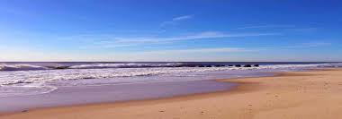
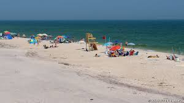
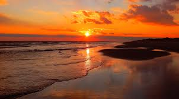
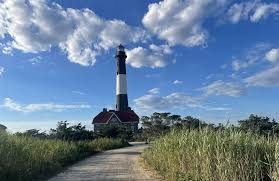

My recent trip to Fire Island was an unforgettable adventure filled with breathtaking views and exciting outdoor activities. From the moment I arrived, I was amazed by the island's natural beauty, including its wide sandy beaches, rolling dunes, and crystal-clear ocean waters. I spent my days walking along the shoreline, feeling the cool sea breeze and listening to the relaxing sound of the waves. One of the highlights of the trip was exploring the nature trails that wind through the island's protected landscapes. Along the way, I saw a variety of birds and native plants, making the experience both peaceful and educational. I also enjoyed visiting the historic lighthouse, which offered stunning views of the surrounding coastline. In the evenings, I watched spectacular sunsets paint the sky with shades of orange, pink, and purple as the sun disappeared over the horizon. The calm atmosphere and beautiful scenery provided the perfect escape from the busy pace of everyday life. Whether I was relaxing on the beach, taking photographs, or simply enjoying the fresh ocean air, every moment felt special. Fire Island's unique combination of natural beauty, wildlife, and tranquility made this one of my favorite travel experiences, and I look forward to visiting again in the future.


